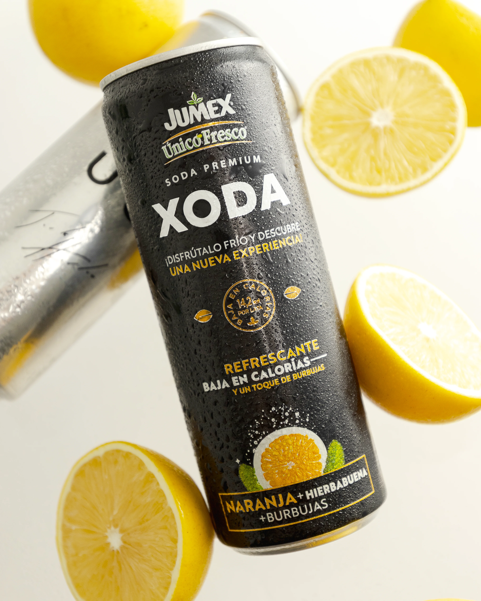
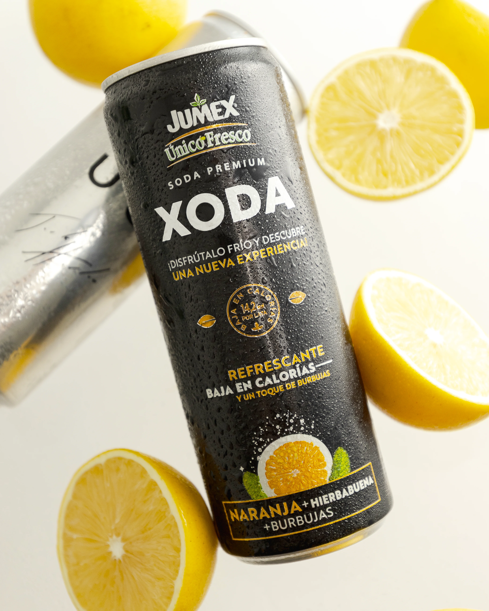
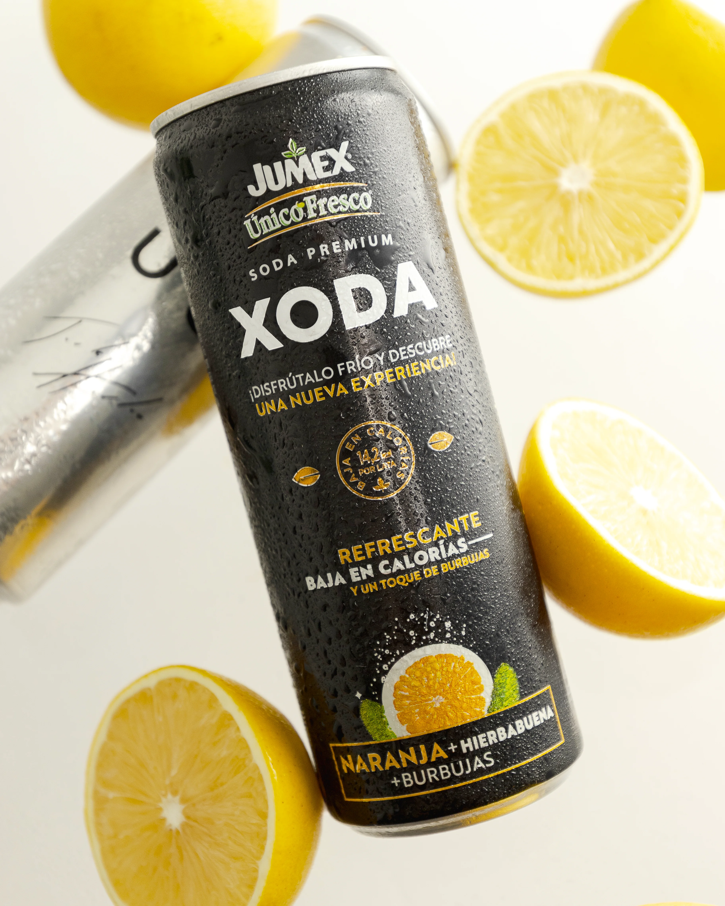

100%
CARGANDO

100%
CARGANDO
Paquete 1
Este paquete está diseñado para emprendedores y pequeñas empresas que buscan una solución económica pero efectiva para mejorar la imagen de su marca. E incluye:
- 6 Fotografías
- 1 Hora de Sesión
- Entrega 1 dia despues
$1200 MXN
Paquete 2
Este paquete te permite mostrar una mayor variedad de tus productos o platillos, ideal para menús más completos o el contenido mensual de tu marca. E incluye:
- 10 Fotografías
- +-1 Hora de Sesión
- Entrega en 1 dia
$1600 MXN

Paquete 3
Este paquete se recomienda para que muestres la mayor parte de platillos de tu menu para que tu negocio cuente con una estetica visual homogenea e impactante. E incluye:
- 20 Fotografías
- +-2 Hora de Sesión
- Entrega en 2 dias
$2900 MXN

Paquete 4
Este paquete es perfecto para negocios en crecimiento que buscan una presencia visual sólida y consistente. Ideal para menús completos, campañas de marketing o contenido mensual. E incluye:
- 35 Fotografías
- +-3 Hora de Sesión
- Edición para redes Sociales
- 3 dias para la entrega
$4200 MXN
Paquete 5
Este paquete es ideal para negocios establecidos que buscan una renovación completa de su imagen visual. Perfecto para campañas publicitarias, relanzamientos de marca o menús estacionales o el contenido de varios meses. E incluye:
- 50 Fotografías
- 4-5 Hora de Sesión
- Entrega en 5 dias
$5500 MXN


Fotografia para todo tipo de restaurantes.
Fotografia Profesional.
Food Styling.
Sesion Fotográfica profesional en estudio.
Sesion de fotos en locación.
close